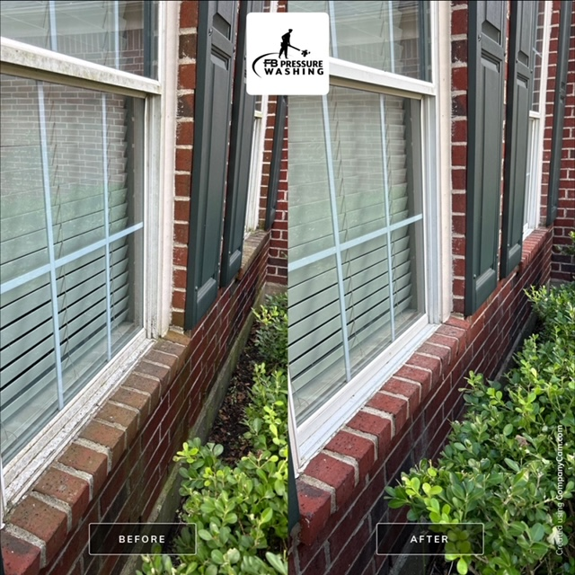

| Why Choose FB Pressure Washing in Pearland, TX?
Reliable and professional cleaning solutions for your property.
- Advanced Pressure Washing Techniques
- Our skilled team uses high-powered equipment and industry-approved techniques to remove dirt, stains, and mildew from surfaces. Whether it's your driveway, patio, or commercial exterior, we ensure a deep and effective clean while protecting the surface from damage.
- Eco-Friendly & Safe Cleaning Solutions
- We use biodegradable cleaning agents and controlled water pressure to ensure effective cleaning without harming your landscaping or nearby waterways. Our eco-conscious methods align with Pearland, TX environmental guidelines, promoting sustainable cleaning practices.
- Customized Pressure Washing for Every Property
- No two properties are the same, which is why we provide tailored pressure washing solutions. Whether you need a gentle soft wash for delicate surfaces or high-pressure cleaning for concrete, we ensure optimal results for homes and businesses in Pearland, TX.

